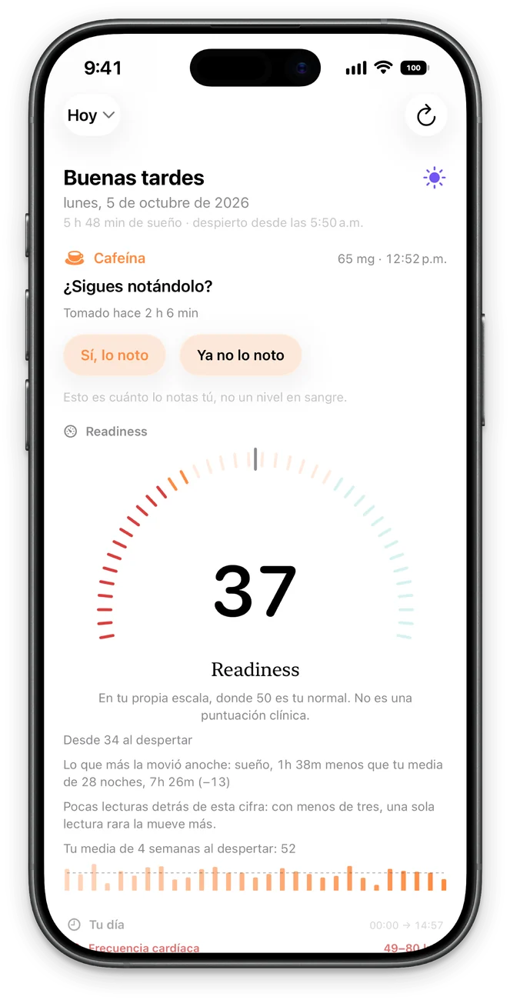
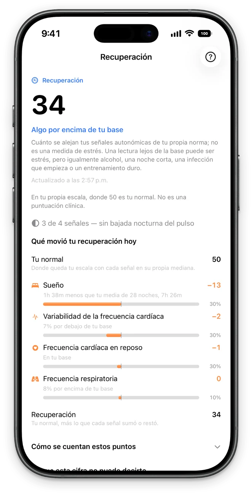
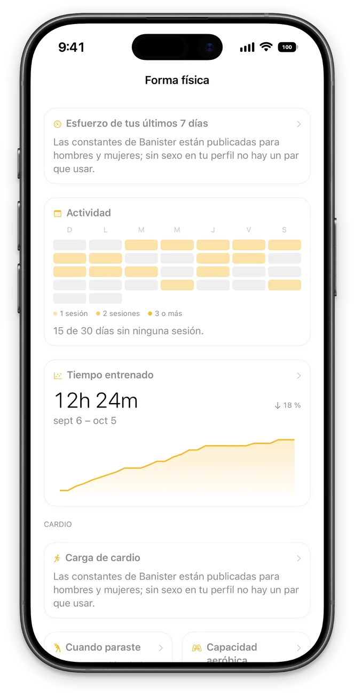
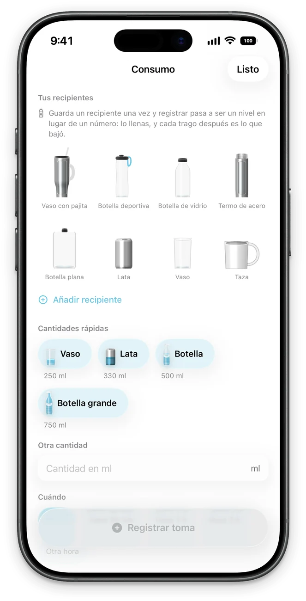
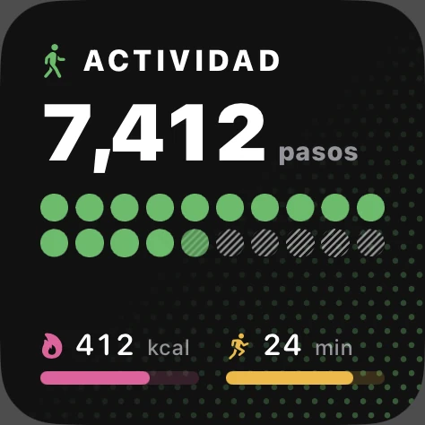
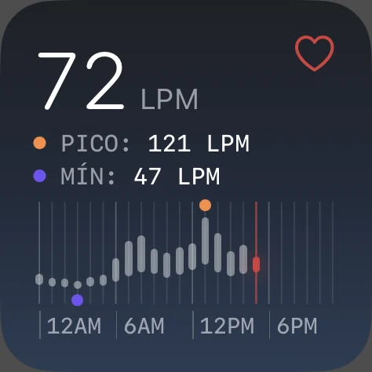
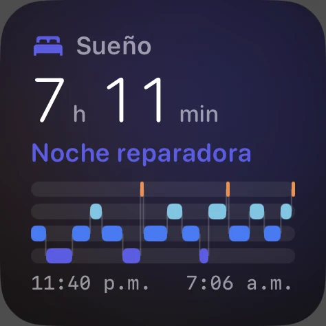

Ya disponible en la App Store
Tus datos, no los de nadie.
Narelia interpreta los datos de tu Apple Watch a la luz de tu propia historia: tus noches, tus semanas, tu rango habitual. Nunca frente a una tabla de población, y sin afirmar más de lo que los datos sostienen.

Descarga gratuita y sin cuenta. Requiere un iPhone con iOS 26; se recomienda un Apple Watch.

Mírala en dos minutos.
La película de lanzamiento: la app entera, pantalla a pantalla, con datos simulados.
Cada cifra, con el cálculo que la sostiene.
Sin puntuaciones opacas. Cada pantalla revela de qué se compone su cifra y con qué días se contrasta.
-
Tus cifras, frente a tu propia historia
-
Cada cifra, con el cálculo que la sostiene

-
Tu estrés a lo largo del día, y la noche aparte

-
Tu esfuerzo, medido contra tus propias semanas

-
Tus recipientes y tus cantidades rápidas

-
Sin cuenta y sin servidores; iCloud, sólo si lo enciendes

Lo que encuentras dentro.
Las cifras de tu reloj y lo que tú apuntas, siempre frente a tu propia historia.
Readiness: cómo llegas hoy
Parte de tu recuperación de la mañana y se mueve con lo que tu reloj mide durante el día. Al tocarla ves por dónde ha pasado el día, no sólo dónde acabó. Si dormiste sin el reloj, lo dice: «Sólo de día».
Recuperación frente a tu propia base
Cada mañana, tu variabilidad, tu pulso en reposo, tu respiración y tu sueño se comparan con tus propias noches, y la pantalla dice cuánto movió cada señal. Si una cifra de la noche queda «muy fuera de tu rango habitual», lo señala, sin decir qué significa.
La noche, el estrés y tus constantes
La noche por fases, el estrés a lo largo del día y tus constantes (variabilidad, pulso, respiración, oxígeno), cada una sobre su rango personal.
Forma física
El esfuerzo de la semana frente a tus semanas habituales, con tus entrenos y tus sesiones de fuerza.
Comidas con una foto
Haz la foto y Narelia propone qué hay en el plato; tú lo confirmas o lo corriges. Se interpreta dentro del iPhone, con Vision y el modelo de Apple Intelligence, en los iPhone compatibles. También por texto o a mano. Con iOS 27, el modelo del dispositivo mira la propia foto.
Tus recipientes, en 3D
El agua y la cafeína se apuntan con tu botella, tu taza o tu lata, dibujadas en 3D: arrastras el nivel sobre el propio recipiente hasta donde queda. Con cantidades rápidas, y creatina y proteína también.
Apple Intelligence te dice tus cifras
Pregúntale por tu variabilidad, tu estrés, tu recuperación, tu Readiness, la noche, el agua o la cafeína, y contesta como su pantalla, sin red. También puedes registrar una toma por voz, y Atajos ofrece «Obtener datos de Narelia».
Tus cifras, en tu iPhone
Narelia deja en el índice de tu iPhone tus cifras de los últimos 28 días, para que Apple Intelligence pueda encontrarlas. Se queda en el dispositivo y se apaga en Ajustes, Apple Intelligence y Siri.
Principios
Datos, no veredictos
Donde otras apps sentencian «tu recuperación es mala», Narelia precisa: «47 minutos por debajo de tu mediana». El cálculo corre por su cuenta; la interpretación, por la tuya.
Transparente mientras aprende
Toda línea base necesita historia. Mientras la tuya se construye, la pantalla indica cuántas noches reúne y cuántas le faltan, en lugar de exhibir una cifra que aún carece de sentido.
Tus días, frente a frente
Registra agua, cafeína o creatina, y Narelia contrasta los días en que los tomaste con aquellos en que no. Si aparece una diferencia, expone ambos grupos de días y qué parte de ella podría deberse al azar.
Reconoce sus límites
Una pantalla en silencio no demuestra que no haya nada. Cuando los datos no bastan para concluir, Narelia lo advierte, con la cifra que falta, en lugar de disimular el vacío.
Más allá de la app.
Readiness, pulso hora a hora, estrés, sueño, constantes vitales, agua y actividad, siempre a la vista: en la pantalla de inicio, en la de bloqueo y en el Apple Watch. Con cuatro estilos a elegir: Narelia, Noche, Editorial y Clásico. Y el Apple Watch tiene su propia app, con tus constantes, tu noche y lo que llevas tomado, más complicaciones con tu recuperación en la esfera.






Gratis, sin recortar tus cifras.
Recuperación, estrés, noche, constantes, consumo y reloj son gratis y no se recortan. Tus propias cifras nunca quedan detrás de un pago.
Narelia Pro quita el único límite: el plan gratuito registra hasta tres comidas al día; con Pro no hay tope.
Pro cuesta 4,99 US$ al mes, con dos semanas de prueba gratis. El precio de tu país lo muestra la App Store, y se gestiona o se cancela desde los ajustes de tu cuenta de Apple.
Sin cuenta. Sin servidor.
Todo el análisis se realiza en tu iPhone. Las fotos de tus comidas las interpretan Vision y el modelo de Apple dentro del propio dispositivo; no salen de él.
Sin cuenta y sin servidor propio: tus datos viven en tu iPhone y en la app Salud. La copia en iCloud es opcional, va a tu propia cuenta y está apagada hasta que la enciendas en Ajustes.
Sin analítica ni identificadores publicitarios. Quien hace la app no conserva copia alguna de tus datos. Lee la política de privacidad.
Descúbrela con tus propios datos.
Ya disponible en la App StoreGratis, sin cuenta. Tus líneas base comienzan a formarse desde las primeras noches con el reloj puesto.